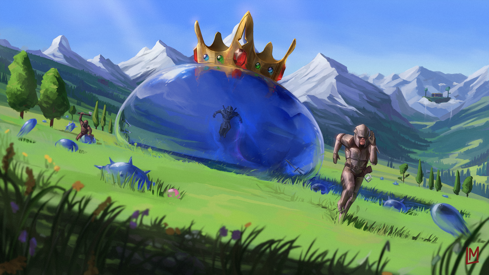
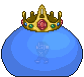
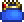
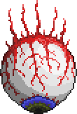
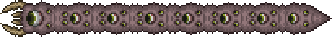

Terraria é um jogo de aventura e sandbox desenvolvido pela Re-Logic. Foi lançado inicialmente em 2011 e está disponível para várias plataformas, incluindo PC, consoles e dispositivos móveis.
No game, os jogadores são colocados em um mundo gerado aleatoriamente, onde têm a liberdade de explorar, construir estruturas, coletar recursos, combater inimigos e descobrir tesouros. O jogo combina elementos de exploração, construção, mineração e combate, oferecendo uma ampla gama de atividades e possibilidades.

Geleia Rei (King Slime)
O King Slime é um dos primeiros chefes encontrados no Terraria e é um dos mais simples de derrotar.
É uma versão maior e mais poderosa do Slime comum.
Ele pode ser encontrado em qualquer lugar na superfície, desde que haja espaço suficiente para ele aparecer.
O King Slime possui 2000 pontos de vida (HP) em todas as plataformas, exceto na versão mobile, onde ele tem 1400 HP.
Ele causa danos principalmente através de contato físico, mas também pode disparar pequenas Slimes para atacar.

APRESENTAÇÃO
Spawn / Summon
Para invocar o King Slime, você precisa encontrar um item chamado "Slime Crown". Ele pode ser criado usando uma coroa de ouro/platina e gel (obtido derrotando Slimes).

BOSS-FIGHT - PREPARO
Itens Recomendados - Estratégias
O King Slime tem um padrão de ataque simples, então a melhor estratégia é ficar em movimento constante para evitar seu contato.
Use armas com alcance suficiente para atacá-lo sem se aproximar muito, como arcos, bestas ou armas de longo alcance.
Se possível, crie algumas plataformas no local de batalha para facilitar a movimentação e esquivar-se dos ataques do King Slime.
Ao derrotar os pequenos Slimes que ele solta, você pode receber pequenos corações que recuperam sua vida, então colete-os sempre que necessário.
Drops
Gel (quantidade alta);
Moedas de cobre, prata ou ouro;
O acessório "Ninja Hood" (ocasionalmente);
O pet "Slime Prince" (ocasionalmente);
Solidificador;
Slime Gun (66,67% de chances);
King Slime Mask (14,29% de chances);
Slime Hook (33,33% de chances);
King Slime Trophy (10% de chances).
Olho de Cthulhu (Eye of Cthulhu)
O Eye of Cthulhu é o primeiro chefe que muitos jogadores encontram no Terraria. Ele se assemelha a um olho flutuante e tem dois estágios distintos durante a batalha.
No primeiro estágio, ele flutua em direção ao jogador, tentando fazer contato físico. Ele tem 2800 pontos de vida (5600 no Expert Mode) e tem uma velocidade considerável. Uma vez que seus pontos de vida caem abaixo de 50%, ele entra no segundo estágio.
No segundo estágio, o Eye of Cthulhu se torna mais rápido e agressivo, ganhando novos ataques, como disparar projéteis de sangue e lançar-se em alta velocidade em direção ao jogador.

APRESENTAÇÃO
Spawn / Summon
O Eye of Cthulhu é ativado manualmente pelo jogador usando um item chamado "Suspicious Looking Eye" durante a noite. O jogador pode encontrá-lo em baús subterrâneos ou comprá-lo de um Merchant quando tem mais de 6 NPCs vivendo em sua cidade.
BOSS-FIGHT - PREPARO
Itens Recomendados - Estratégias
Preparação: Antes da batalha, certifique-se de ter uma boa armadura, armas e poções para aumentar seus atributos. Itens como Ironskin Potion, Regeneration Potion e Swiftness Potion são úteis.
Arena: Construa uma arena espaçosa com plataformas para facilitar a movimentação. Também é útil colocar Campfires e Heart Lanterns para aumentar a regeneração de vida.
Movimentação: Durante a batalha, mantenha-se em constante movimento para evitar ser atingido pelo Eye of Cthulhu. Usar um gancho ou asas pode ajudar na mobilidade.
Ataques à distância: Se você tiver acesso a armas à distância, como arcos ou armas de fogo, utilize-as para atacar o chefe.
Lâminas e armas corpo-a-corpo: No segundo estágio da batalha, quando o Eye of Cthulhu se torna mais rápido, armas corpo-a-corpo, como espadas e lanças, podem ser mais eficazes. Mantenha-se em movimento e desvie dos ataques.
Drops
Demonite/Crimtane Ore (dependendo da corrupção/carmim em seu mundo);
Suspicious Looking Eye (usado para convocar o chefe novamente);
Treasure Bag (apenas no Expert Mode);
Binóculos;
Shield of Cthulhu (apenas no Expert Mode).
Devorador de Mundos (Eater of Worlds)
Apontado como o segundo chefe do game, sendo necessário para progressão, caso tenha escolhido a maldade "Corruption".
Trata-se de um enorme verme que atravessa as profundezas sombrias. Possui um total de 10.050 (Clássico e Journey)/15.120 (Expert)/19.224 (Master) de saúde em todas as plataformas.

APRESENTAÇÃO
Spawn / Summon
Tradicionalmente, pode ser invocado ao quebrar três Shadow Orb, encontrados em pequenos buracos nas Corruption-Chasms, cercados por Ebonstone, o que requer uma picareta com 65% de poder de picareta ou superior para minerar, embora explosivos ou pó de purificação possam ser usados para contornar isso.
Uma vez dentro do alcance, os Shadow Orbs podem ser destruídos com um martelo ou explosivos. O Devorador de Mundos só pode ser convocado na Corrupção e pode ser convocado a qualquer hora do dia. Se conseguir escapar da Corrupção, fugirá e desaparecerá.
Além desse método, o Eater of Worlds também é convocado ao consumir um "Worm Food", fabricado a partir da junção de "pó vil" e "pedaço podre" em frente a um altar maligno
BOSS-FIGHT - PREPARO
Itens Recomendados - Estratégias
Armas à Distância: Armas como arcos, bestas e armas de fogo podem ser eficazes contra o Eater of Worlds. Essas armas permitem que o jogador cause dano à distância, mantendo uma distância segura do monstro.
Armas Corpo-a-Corpo: Armas de corpo-a-corpo com alto dano, como espadas e martelos, também podem ser eficazes contra o Eater of Worlds. O jogador deve tentar acertar a cabeça do monstro, já que isso causa mais dano.
Bombas: Bombas podem ser usadas para destruir o chão e criar espaço para o jogador se mover. Também podem causar dano significativo ao monstro se usadas corretamente.
Estrutura Defensiva: Construir uma estrutura defensiva, como uma torre ou muro, pode ajudar a proteger o jogador de ataques do Eater of Worlds. O jogador pode ficar em cima da estrutura e atirar em direção ao monstro.
Poções: O uso de poções de cura, defesa e resistência pode ser útil para aumentar a sobrevivência do jogador durante a batalha.